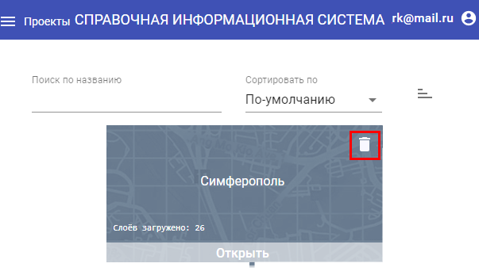

<p>
    <strong>Выход из системы</strong>
</p>
<ol>
  <li>
    Для выхода из системы необходимо щёлкнуть ЛКМ по электронной почте пользователя в правом углу верхней панели. После чего нажать «Выйти».
    <center></center>
    <center><strong>Выход из системы</strong></center>
  </li>
</ol>
